Half the gelato shops in central Rome are serving industrial, pre-mixed product with artificial colors and flavors — the Italian equivalent of soft-serve from a box. The neon-green "pistachio" piled in Instagram-ready mountains? That's not gelato. That's a tourist trap.
We combed through hundreds of Reddit posts from r/rome, r/ItalyTravel, and r/roma to find the gelaterias that Roman locals and experienced travelers actually recommend. The result: 18 shops ranked by how often real people vouch for them, with tourist trap warnings included.
🚩 How to spot fake gelato
Fluorescent colors = artificial. Real pistachio is olive-brown, not neon green. Piled high in mountains = loaded with stabilizers. Real gelato is stored flat or in covered metal pozzetti. 50+ flavors with names in English = tourist trap. Touts outside waving you in = run. The best gelaterias in Rome have modest displays and lines of Italians.
What to order: Pistachio — the ultimate test of a gelateria, and Torcé's is legendary. Also try any seasonal fruit flavor. The EUR location has the biggest selection.
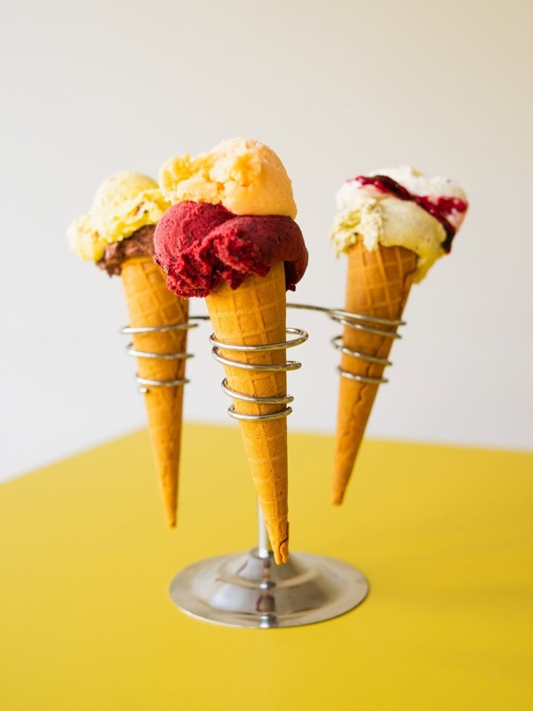
"If I had to pick one, I'd say Torcé; after all, Claudio Torcé basically founded Rome's 'gelato artigianale' movement and taught Otaleg's owner and Fatamorgana's owner how to make ice cream back when they worked for him."
— r/rome · Thread: Best gelato in Rome?
tabiji verdict: The godfather of artisan gelato in Rome. Claudio Torcé trained the founders of both Otaleg and Fatamorgana — two of the other top gelaterias on this list. If you make one gelato pilgrimage in Rome, make it here. The EUR location is out of the way but worth the metro ride.
🍦 €2.50–€5
📍 Multiple locations (Monti, Trastevere, Chiavari, Pigneto)
📌 Google Maps →
What to order: The unusual flavors are the point — try Kentuki (tobacco, dark chocolate, cinnamon), or anything with unexpected ingredients. Great for lactose-free options too.
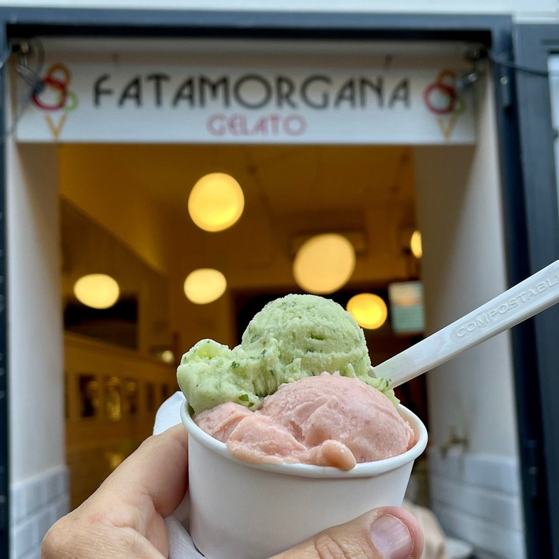
"Fatamorgana is incredible! Tons of unique flavors, top notch ingredients, and there's a few different locations throughout the city."
— r/ItalyTravel · Thread: Gelato warnings before coming
tabiji verdict: The experimental kitchen of Rome's gelato scene. If you want classic flavors done perfectly, go to Torcé. If you want flavors you've never imagined — and excellent dairy-free options — Fatamorgana is your spot. Multiple locations make it easy to fit in.
What to order: The name is "gelato" spelled backwards. Try the pistachio and any of the seasonal flavors. Known for intensely pure, natural flavors.
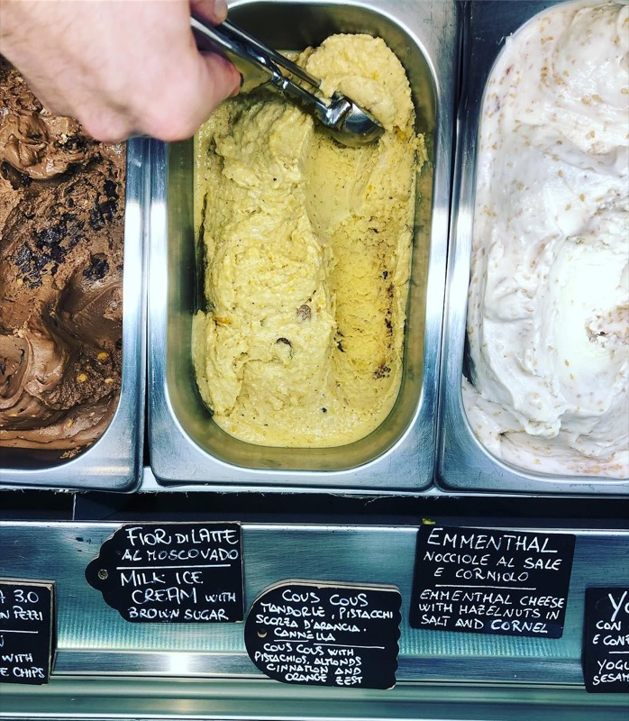
tabiji verdict: Founded by a Torcé apprentice, Otaleg delivers the same artisan philosophy in a Trastevere location. Perfect if you're combining a pasta crawl through Trastevere with a gelato stop. Consistently mentioned by Roman locals.
What to order: The dark chocolate is exceptional. They dip your cone in melted chocolate — an experience in itself. Only one location, only gelato.
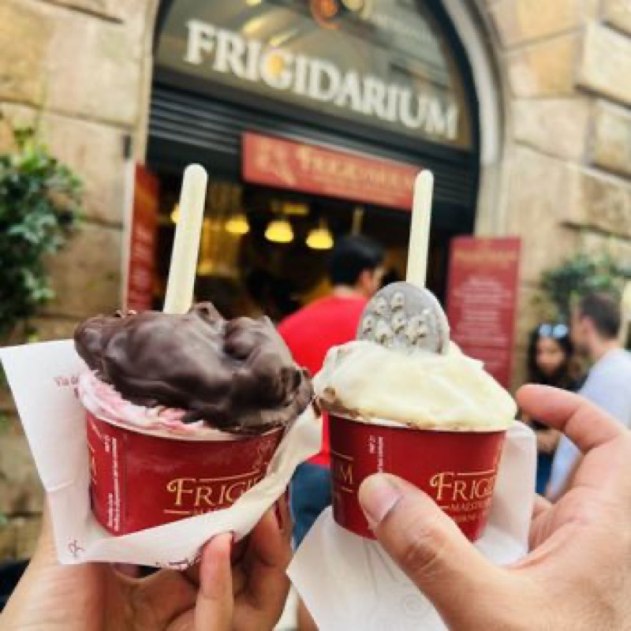
"They have only 1 location and they offer only gelato — this is a good sign and indeed, it was our favorite gelato, that's why it was the only place that we went back to."
— r/rome · Thread: Back from Rome, best gelato
tabiji verdict: The most conveniently located top-tier gelateria — right in the heart of the Centro Storico near Piazza Navona. Single-location, gelato-only focus is a quality signal. The chocolate-dipped cone is worth the visit alone.
What to order: Seasonal fruit flavors — they change based on what's fresh. The pistachio and nocciola are consistently excellent.
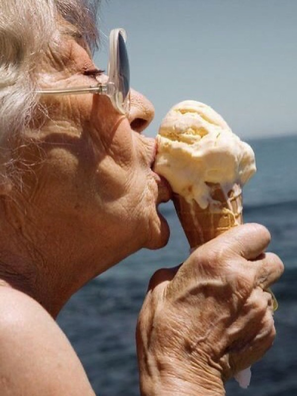
"In Prati you can find Neve di Latte, La Romana and La Gelateria dei Gracchi pretty close to each other if you want to do a mini gelato tour."
— r/rome · Thread: Best gelato in Rome is…
tabiji verdict: The best gelato near the Vatican by a significant margin. Seasonal ingredients and artisan craft — recommended by both Italian-speaking locals on r/roma and English-speaking visitors. Perfect post-Vatican gelato stop.
What to order: The ricotta and fig, or the sage and raspberry. Creative combinations backed by artisan quality. You can watch them make it in the lab.
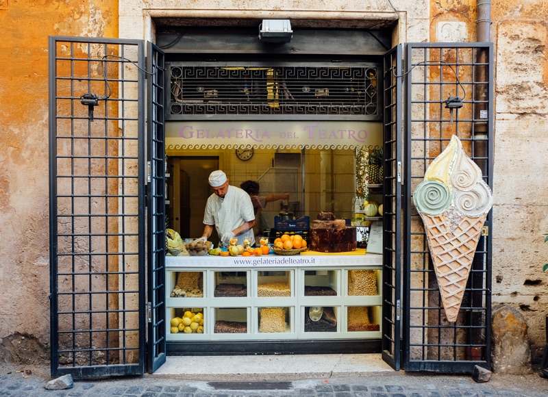
tabiji verdict: Steps from Frigidarium, so you can easily compare both. The on-site lab where you can watch them make the gelato is a nice touch. Creative flavor combinations that actually work, not just novelty for novelty's sake.
What to order: The fior di latte (pure milk gelato) lives up to the name. The affogato is also excellent. Same covered-container setup as the top gelaterias.
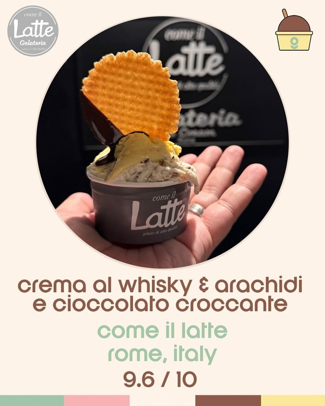
"Come il Latte, they have the same set up as La Romana in terms of their gelato and they're only about 5 mins from each other so you can compare both."
— r/rome · Thread: Best gelato in Rome is…
tabiji verdict: The name means "Like Milk" and the fior di latte is the star. Covered metal containers (pozzetti) signal quality. Slightly off the main tourist path, which keeps it honest.
What to order: Fewer flavors, all exceptional. The vanilla and any seasonal fruit are standouts. Minimalist approach — fewer options, higher quality.
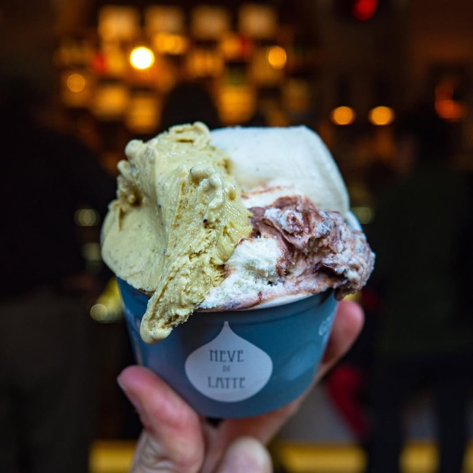
tabiji verdict: The Scandinavian-minimalist of Rome's gelato world. Fewer flavors, obsessive sourcing, zero gimmicks. In Prati near the Vatican — pair with Gelateria dei Gracchi for a gelato double-header.
What to order: The pistachio and dark chocolate. Clean, intense flavors without overwhelming sweetness. Near Campo de' Fiori.
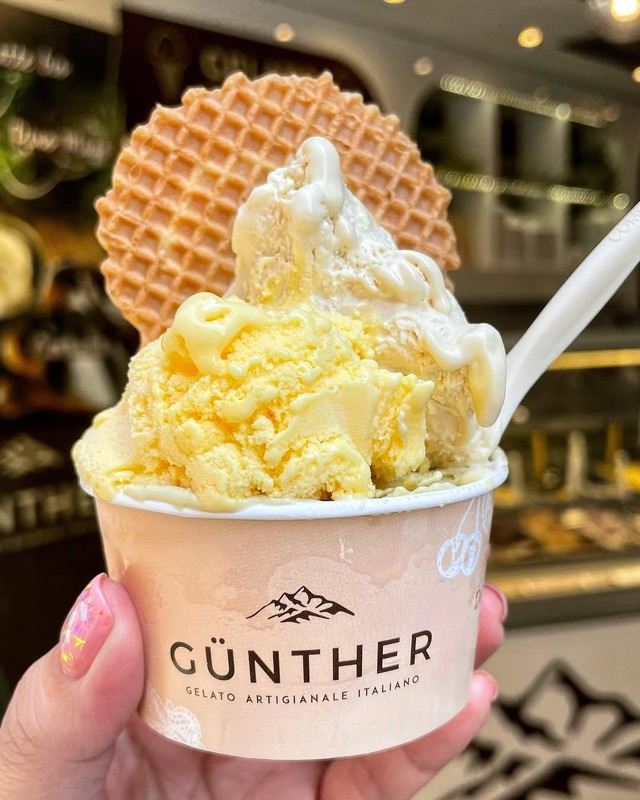
tabiji verdict: A quiet artisan spot between Trastevere and the Centro Storico. Mentioned alongside top-tier names by gelato-obsessive Redditors. Perfect mid-walk stop between Campo de' Fiori and Trastevere.
🍦 €2.50–€6
📍 Via degli Uffici del Vicario, 40 (near Pantheon)
📌 Google Maps →
What to order: Classic flavors — champagne, crema, or their famous zabaione. The historic interior is half the experience.
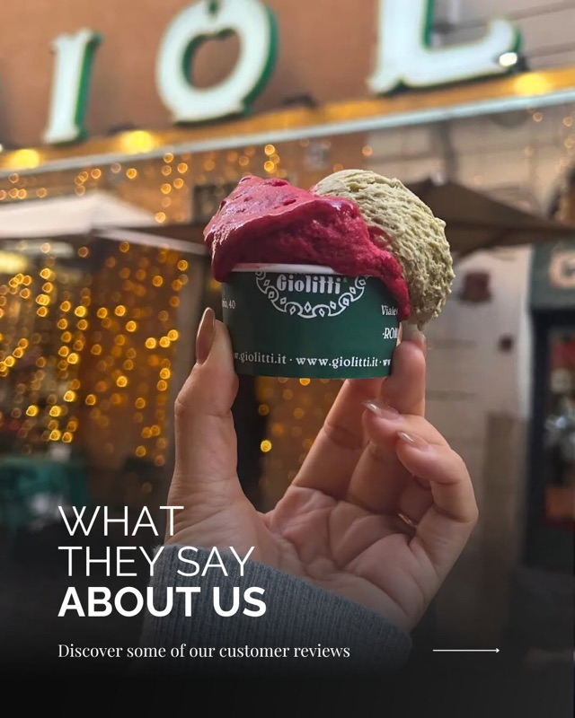
tabiji verdict: A Roman institution since 1900 — not the absolute best gelato in the city anymore, but still good and the historic atmosphere is genuinely special. Worth one visit for the experience, then spend the rest of your gelato budget at Torcé or Fatamorgana.
What to order: The mango. Seriously, just the mango. Redditors call it "in a league of its own."
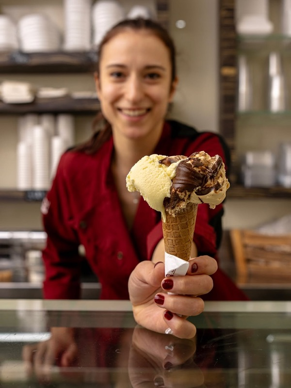
"Also I Mannari specifically for the mango ice cream (the other flavours are very good, but not better than Torcé's; the mango is in a league of its own)."
— r/rome · Thread: Back from Rome, best gelato
tabiji verdict: A one-hit wonder in the best sense — the mango sorbetto is apparently transcendent. If you're a fruit gelato person more than a cream gelato person, put this at the top of your list.
What to order: The cream-based flavors are the strength. Nocciola and pistachio are both excellent.
tabiji verdict: Mentioned by Italian-speaking locals on r/roma in the same breath as Otaleg and Fatamorgana — high praise. Off the tourist map entirely, which means you'll be eating with Romans.
What to order: Try whatever's seasonal. Testaccio is Rome's foodie neighborhood, so the quality bar is high.
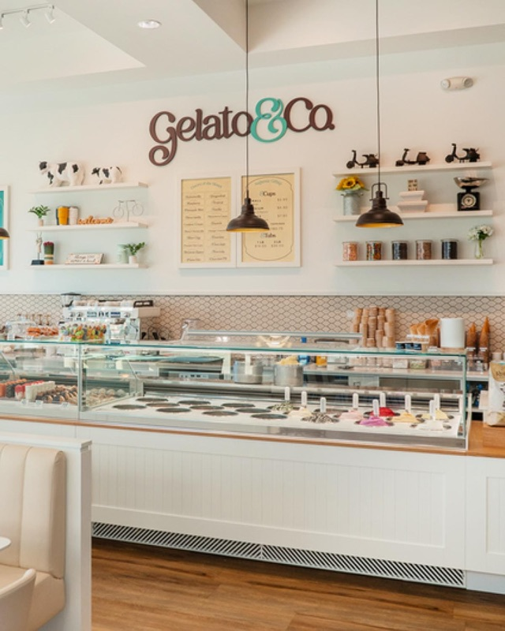
tabiji verdict: In Testaccio — Rome's working-class food neighborhood. If you're doing the Testaccio market, this is your gelato stop. Zero tourist pretension.
What to order: The name means "The Hazelnut Witch" — so obviously, the nocciola. But the creative flavors are worth exploring too.
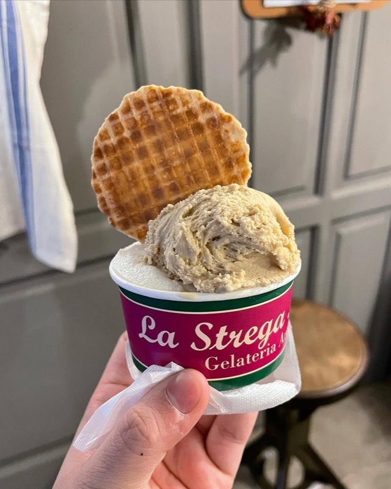
"Come il Latte, La Romana is still quite good for a chain, Lemongrass near Vatican, La Strega Nocciola."
— r/ItalyTravel · Thread: Top gelato places Rome
tabiji verdict: "The Hazelnut Witch" — a name like that deserves a visit. Good creative flavors alongside the classics. Multiple locations make it easy to stumble upon.
What to order: Cream-based flavors are the strong suit. Ask the staff for recommendations — they know their product.
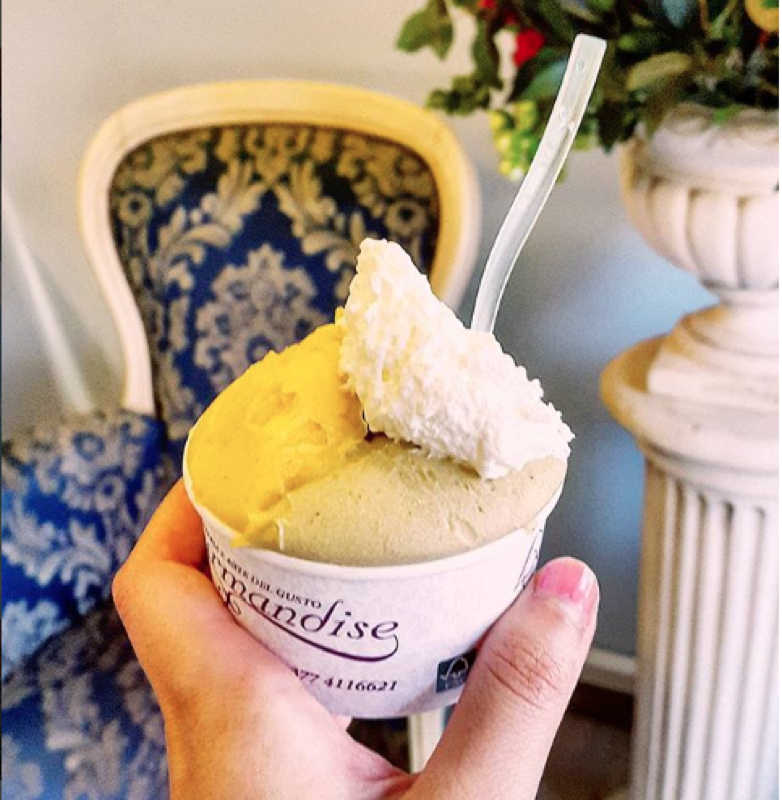
tabiji verdict: When Italian-speaking Romans say a gelateria is "infinitely better" than a popular one, pay attention. Way off the tourist trail — you'll need to seek this one out deliberately.
What to order: Classic Italian flavors done with care. The smaller neighborhood scale means personal attention to quality.
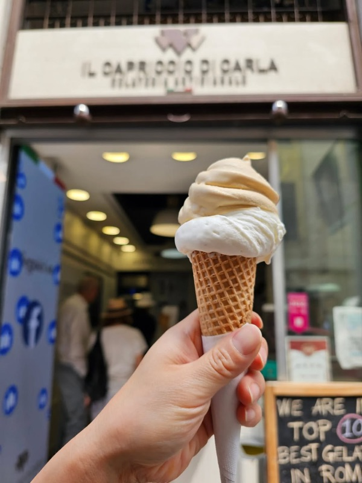
"My 3rd place goes to Gelateria Artigianale Il Capriccio di Carla Roma Monti. It's near the basilica of Santa Maria Maggiore."
— r/rome · Thread: Best gelato in Rome is…
tabiji verdict: A neighborhood gelateria in Monti that punches above its weight. If you're visiting Santa Maria Maggiore or exploring the Monti neighborhood, this is your gelato stop. Small, personal, authentic.
What to order: The Mont Blanc (Monte Bianco) — a chestnut cream flavor that Redditors call "beyond delicious."
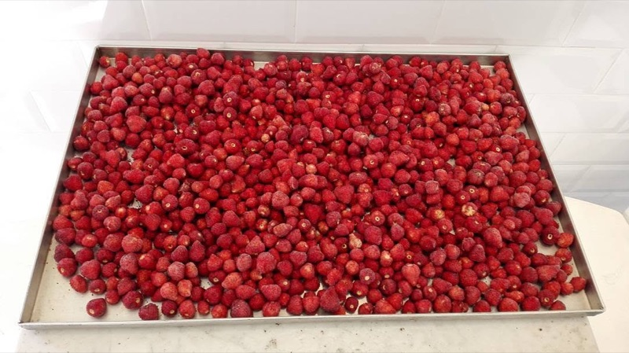
tabiji verdict: Deep in a residential neighborhood that tourists never visit. The Mont Blanc flavor alone makes it worth a dedicated gelato pilgrimage. Zero English needed — zero tourists encountered.
🍦 €2.50–€5
📍 Viale dei Bastioni di Michelangelo, 5 (near Vatican)
📌 Google Maps →
What to order: Famous for enormous portions. The pistachio and nocciola are the safe bets. You'll get more gelato per euro than almost anywhere in Rome.
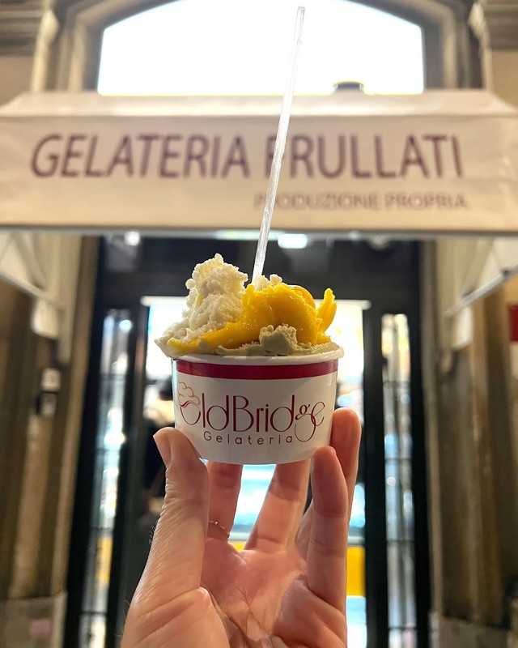
⚠️ Mixed reviews: Old Bridge is famous for size, not necessarily top-tier quality. Reddit opinions are divided — some love it, others say it's coasting on reputation.
tabiji verdict: The honest truth: Old Bridge gives you a mountain of decent gelato for cheap. Is it the best in Rome? No. Is it the most gelato per euro near the Vatican? Probably yes. If you're on a tight budget post-Vatican, it'll do. If quality matters more than quantity, walk to Gelateria dei Gracchi instead.
Frequently Asked Questions
How can I spot a tourist trap gelato shop in Rome?
Fluorescent, unnaturally bright colors (real pistachio is olive-brown, not neon green); gelato piled high in mountains above the tub; shops with 50+ flavors and touts outside; and locations directly facing major monuments. Good gelaterias keep gelato in covered metal pozzetti or flat in the display case.
How much does gelato cost in Rome?
A small cup or cone at a quality gelateria costs €2.50–€3.50 and usually includes 2 flavors. A medium runs €3.50–€5 with 2-3 flavors. Anything under €2 is suspicious; anything over €6 for a small is a ripoff.
What are the best gelato flavors to try in Rome?
Classic flavors to try: pistachio (the ultimate quality test), stracciatella, nocciola (hazelnut), fior di latte (pure milk), and seasonal fruit sorbetto. For something unique, try ricotta e fichi or crema di Gianduia. Avoid anything Puffo (Smurf) blue.
What's the difference between gelato and ice cream?
Gelato has less fat (4-8% vs 14-25%), less air churned in (denser), and is served warmer — all of which means flavors hit harder and feel more intense. Real artisan gelato is made fresh daily. The lower fat content is why it melts faster, so eat quickly.
Is Giolitti gelato overrated?
Reddit is split. Giolitti is a genuine institution (since 1900) with good gelato, but it's no longer the best in the city. Worth one visit for the history and beautiful interior, but gelato purists should prioritize Torcé, Fatamorgana, or Gelateria dei Gracchi.
Where is the best gelato near the Vatican?
In Prati near the Vatican: Gelateria dei Gracchi (top-tier artisan), Neve di Latte (minimalist excellence), and Old Bridge (famous for huge portions). Avoid gelato shops directly on Via della Conciliazione — those are tourist traps.